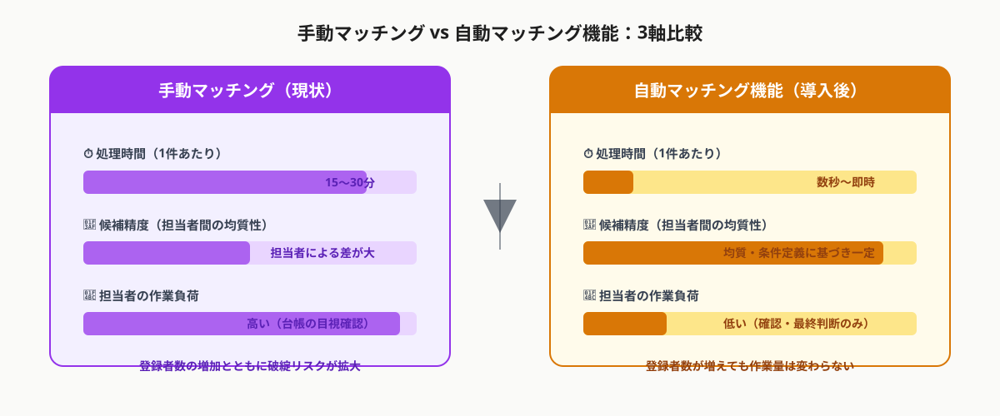
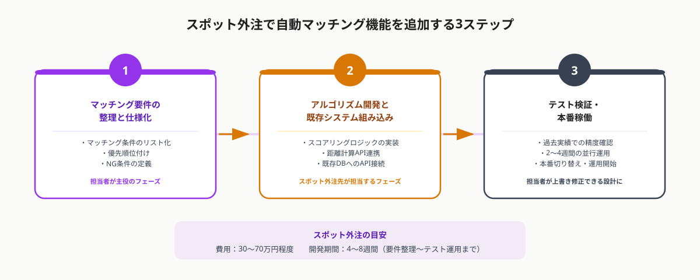

人材派遣業の手動マッチングが限界を迎えるタイミング
人材派遣会社では、登録スタッフのアサイン業務が担当者の経験と勘に頼る「手動マッチング」で運用されているケースが多くあります。登録スタッフが数十名の段階では問題になりませんが、数百名規模を超えたあたりから次のような問題が顕在化します。
- 候補者の探索に時間がかかる：勤務地の最寄り駅からの距離・希望勤務時間帯・過去の稼働履歴などを、スタッフ台帳を目視で確認しながら探すため、1件のアサインに15〜30分かかることがある
- 担当者間でアサイン品質にばらつきが出る：ベテラン担当者は経験でカバーできるが、新人担当者は候補選定の精度が低く、スタッフのキャンセルや稼働後のクレームにつながりやすい
- 同じスタッフに集中してオファーが届く：担当者が「知っているスタッフ」「最近連絡した人」に偏ったオファーをするため、登録スタッフの稼働率に偏りが生じる
- 繁忙期に対応が追いつかない：案件が同時多発した際、候補者探索に割ける時間が足りず、採用充足率が下がる
こうした課題を「システムでの自動マッチング」によって解決しようとするのは自然な発想です。しかし現実には、既存の台帳システムを開発した会社に追加機能の相談をしたところ、「費用が高額になる」「開発期間が半年以上かかる」「仕様変更の影響が大きく対応が難しい」と断られるケースが頻繁に起こっています。
「既存ベンダーに断られた機能」をスポット外注で追加できる理由
複数の条件（勤務地と自宅の距離・希望勤務時間帯・稼働可能日・経験職種・過去評価など）に重み付けをして候補者をスコアリングし、最適な人材を自動で絞り込む仕組み。人間が目視で行っていた候補探索を、定義したルールに従って瞬時に実行するシステム機能。
既存ベンダーが機能追加を断る最大の理由は、「既存システムのコードを改修するリスクと工数が大きいから」です。既存システムの内部構造を熟知しているベンダーは、変更によるバグ発生リスクを慎重に見積もるため、見積もりが高額になりやすい傾向があります。
スポット外注では、この問題を「機能を切り出す」アプローチで解決します。
- 既存システムには手を加えない：既存の台帳DBに読み取り専用でアクセスし、別アプリ・別APIとして自動マッチング機能を構築する。既存システムへの影響をゼロにできる
- 結果だけを既存画面に表示する：マッチング結果をAPIで既存システムに返す構成にすれば、担当者は今まで通りの画面操作で候補者リストを確認できる
- 開発範囲が明確で見積もりしやすい：「マッチングアルゴリズムの開発とAPI接続」という限定されたスコープのため、スポット外注の単発案件として発注しやすい
既存ベンダーの許可は必要ですか？という疑問をよく受けますが、既存DBへのアクセス方法（読み取り専用の接続情報の提供）については既存ベンダーの協力が必要な場合があります。ただし「既存システムの改修」ではないため、多くの場合は「接続情報を共有する」対応だけで済みます。事前に既存ベンダーへ相談しておくと進行がスムーズです。
自動マッチング機能を追加する3ステップ
ステップ1｜マッチング要件を整理し仕様書に落とし込む
最初のステップは、「どの条件を、どんな優先順位で組み合わせてマッチングするか」を整理することです。この作業はエンジニアではなく業務担当者が主役です。
よくあるマッチング条件の例
- 勤務地の最寄り駅からスタッフ自宅（登録住所）の最寄り駅までの乗り換え回数・所要時間
- 希望勤務時間帯（早朝・日中・夜間・深夜）との一致度
- 稼働可能曜日・希望休日との一致度
- 経験職種・業界経験の有無
- 過去の勤務先クライアントとの相性（過去評価スコア）
- 直近の稼働状況（直前1ヶ月の稼働が少ないスタッフを優先）
①絞り込み条件とNG条件（例：片道60分超は除外）
②スコアリングの優先順位（例：距離＞時間帯一致＞稼働回数）
③結果の表示件数と形式（例：上位10名をスコア順に表示）
④担当者が結果を上書きできるか（推奨：できる構成に）
「仕様書をどう書けばいいか分からない」という場合は、スポット外注先のエンジニアに「ヒアリングから仕様整理まで一緒にやってほしい」と依頼することもできます。業務の流れを説明するだけで、エンジニア側が要件をまとめてくれるケースも多いです。

ステップ2｜自動マッチングアルゴリズムを開発し既存システムに組み込む
要件が整理できたら、スポット外注先のエンジニアが実装を進めます。このフェーズでの開発のポイントは「既存システムに依存しない独立したロジック」として実装することです。
実装の典型パターン
- バッチ処理方式：1日1回または案件登録のたびに、全スタッフを対象にスコアリングを実行しランキングをDBに保存する。既存画面からランキングテーブルを参照するだけで候補者リストが表示される。シンプルで安定性が高い。
- APIリクエスト方式：担当者が案件の条件（勤務地・時間帯等）を入力すると、マッチングAPIにリクエストが送信され、リアルタイムでスコアリング結果が返ってくる。条件を変えてすぐに候補を見直せる柔軟性がある。
どちらの方式が適切かは、既存システムの構成と担当者のニーズによって変わります。「とにかく早く動かしたい」場合はバッチ処理方式が短期間で実装でき、「担当者が条件を試行錯誤したい」場合はAPIリクエスト方式が使いやすいです。
距離計算には、Google Maps APIまたはジョルダンAPI（乗り換え時間）を使うのが一般的です。APIの利用料は月額数千〜数万円程度で運用できます。
ステップ3｜テスト・検証を行い本番稼働する
アルゴリズムが完成したら、実際の業務データを使ってテストします。重要なのは「完璧な精度を求めすぎない」ことです。
テスト・検証のポイント
- 過去実績での正答率確認：過去1〜3ヶ月の案件について「自動マッチングが提案した上位3名に、実際にアサインされたスタッフが含まれているか」を確認する。70%以上を目標にすると現実的
- 担当者が結果を上書きできる設計にする：自動提案はあくまで「候補者の絞り込み」として使い、最終決定は担当者が行う構成にする。AIの判断を絶対視しない設計が長続きするシステムの条件
- 2〜4週間の並行運用期間を設ける：本番切り替え前に、自動マッチング結果と手動マッチング結果を並べて比較する期間を設ける。担当者がシステムに慣れるための移行期間にもなる

本番稼働後は、定期的にスコアリングロジックの精度を見直すことをお勧めします。スタッフの稼働傾向や担当者の上書き履歴をフィードバックとして活用することで、精度を継続的に改善できます。ただし、この改善作業もスポット外注として「四半期に1回の精度チューニング」という形で依頼することが可能です。
スポット外注の費用感と発注のコツ
自動マッチング機能の追加をスポット外注した場合の費用と期間の目安は次の通りです。
バッチ処理方式：20〜40万円（シンプルな条件・距離計算API込み）
APIリクエスト方式：40〜70万円（リアルタイム処理・UI連携込み）
開発期間：4〜8週間（要件整理〜テスト運用まで）
※Google Maps API等の利用料・インフラ費用は別途
既存ベンダーへのフルリプレイスや、大手SIerへの受託開発（数百万〜数千万円）と比べると大幅に低コストです。「まず最小限の条件でスモールスタートし、精度が上がったら条件を追加する」という段階的なアプローチをとれることもスポット外注の強みです。
発注時に伝えるべき情報
- 既存システムの技術スタック（言語・DB・フレームワーク）
- スタッフの登録件数（現在・将来見込み）
- 使いたいマッチング条件のリスト（優先度付き）
- 既存ベンダーとのAPI・DB接続の調整が可能かどうか
- 担当者が使う画面への表示イメージ（スクリーンショット等があれば）
これらをメモ書き程度でまとめて共有するだけでも、エンジニアから具体的な提案・見積もりを受け取れます。「要件が全部決まっていないと相談できない」と思う必要はなく、「こういう悩みがあって、こんなことができたら助かる」という状態から相談を始めるのが実際には一番スムーズです。
よくある質問
- Q. 既存システムのベンダーに許可を取る必要はありますか？
- A. 既存DBへの読み取り専用接続が必要なため、既存ベンダーへの事前連絡は推奨します。ただし「改修」ではなく「別機能の追加」のため、接続情報共有の協力だけで済むケースがほとんどです。
- Q. マッチング精度が低かった場合はどうすればいいですか？
- A. 担当者が結果を上書き修正できる設計にしておけば、精度が100%でなくても実運用できます。上書き履歴をフィードバックとしてロジックを改善する仕組みも、スポット外注で追加依頼できます。
- Q. 登録スタッフが増えてもシステムが遅くならないか心配です。
- A. バッチ処理方式を採用すれば処理は夜間など業務時間外に行われるため、担当者が使う時間帯のレスポンスに影響しません。APIリクエスト方式でも、スタッフ数千名規模であれば通常のサーバースペックで十分対応できます。
まとめ
人材派遣スタッフの自動マッチング機能をスポット外注で追加するポイントは3つです。①担当者が業務ベースでマッチング条件を整理し仕様を固める、②機能だけを独立した形で開発して既存システムに接続する、③担当者が上書きできる設計でテスト運用してから本番稼働する。
既存ベンダーが断った機能でも、「既存システムに手を加えず機能を外付けする」アプローチなら別のエンジニアにスポット依頼できます。費用は30〜70万円・期間は4〜8週間が目安です。「要件が固まっていない」状態でも、ヒアリングから一緒に進められるエンジニアに相談するのが最速の近道です。